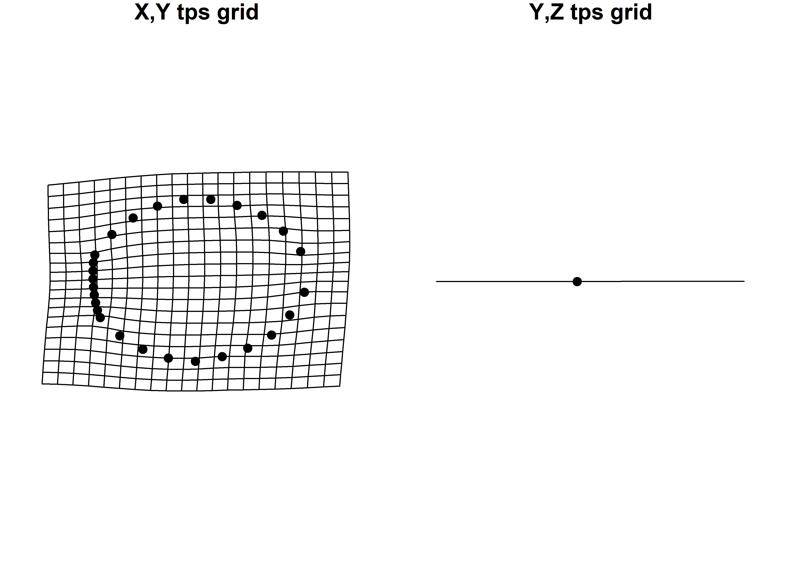
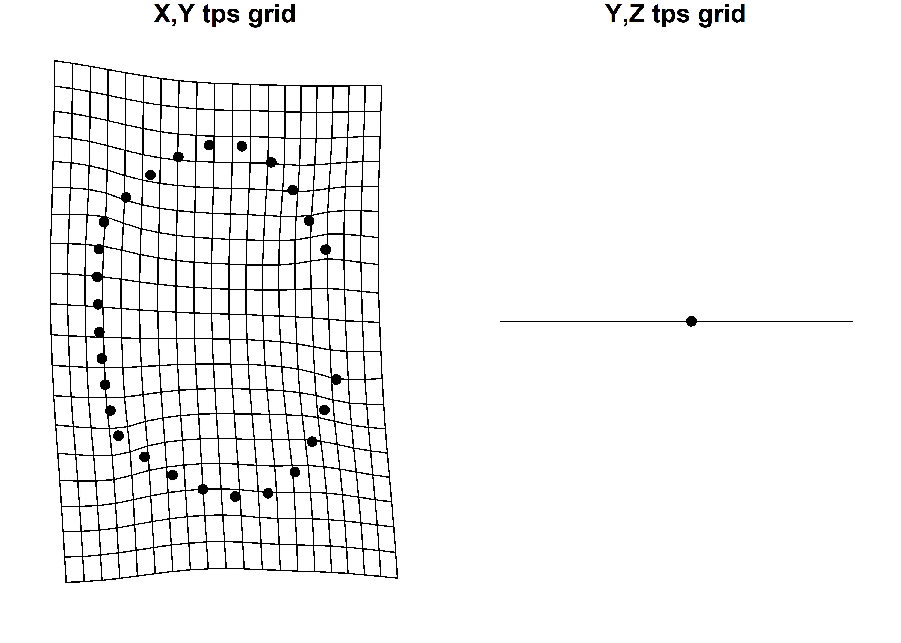
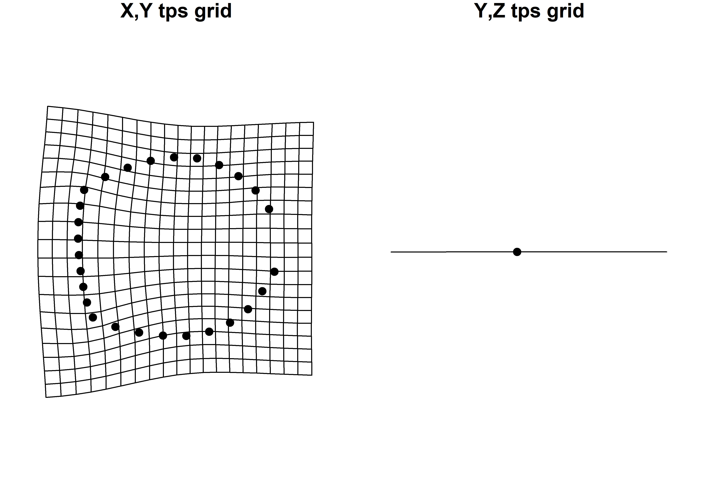
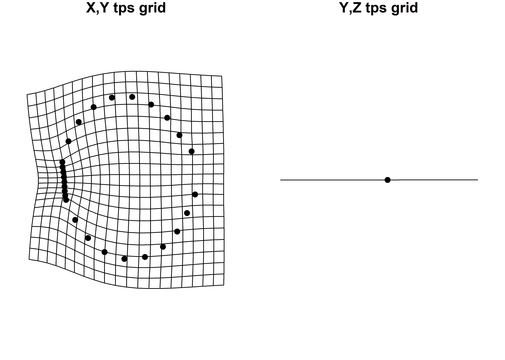

Chapter 5 3DGM: Body morphology
5.1 Load packages + data
# load packages
library(here)
library(geomorph)
library(tidyverse)
library(wesanderson)
# read GM data
source('readmulti.csv.R')
setwd("./data")
filelist <- list.files(pattern = ".csv")
coords <- readmulti.csv(filelist)
setwd("../")
# read qualitative data
qdata <- read.csv("qdata.csv",
header = TRUE,
row.names = 1)
qdata <- qdata[match(dimnames(coords)[[3]],
rownames(qdata)),]5.2 Generalised Procrustes Analysis
Landmark data were aligned to a global coordinate system (Kendall 1981, 1984; Slice 2001), achieved through generalised Procrustes superimposition (Rohlf and Slice 1990) performed in R 4.0.3 (R Core Development Team, 2020) using the geomorph library v. 3.3.2 (Adams et al. 2017; Adams and Otárola-Castillo 2013). Procrustes superimposition translates, scales, and rotates the coordinate data to allow for comparisons among objects (Gower 1975; Rohlf and Slice 1990). The geomorph package uses a partial Procrustes superimposition that projects the aligned specimens into tangent space subsequent to alignment in preparation for the use of multivariate methods that assume linear space (Rohlf 1999; Slice 2001).
#select landmarks associated with body
b <- c(10:19, 27:36)
# new coords body
body.coords <- coords[b,,]
# gpa
Y.gpa <- gpagen(body.coords,
PrinAxes = TRUE,
ProcD = TRUE,
Proj = TRUE,
print.progress = FALSE)
# geomorph data frame
gdf <- geomorph.data.frame(shape = Y.gpa$coords,
size = Y.gpa$Csize,
type = qdata$type)
# render 3d gpa plot
#plot(Y.gpa)
# gpa plot
#knitr::include_graphics('images/gpa3d.png')
# add centroid size to qdata
qdata$csz <- Y.gpa$Csize
# print updated qdata with centroid size
knitr::kable(qdata,
align = "lccccc",
caption = "Modified attributes included in qdata.")| group | type | csz | |
|---|---|---|---|
| 1608101 | phytomorph | bottle | 274.2253 |
| 1608102 | phytomorph | bottle | 365.0474 |
| 1608111 | anthropomorph | jar | 335.6275 |
| 1608121 | phytomorph | jar | 406.2267 |
| 1608122 | zoomorph | bottle | 336.7217 |
| 1608124 | zoomorph | bottle | 322.6704 |
| 1608125 | zoomorph | bottle | 328.6033 |
| 1608126 | zoomorph | jar | 359.5529 |
| 1608129 | zoomorph | jar | 327.4137 |
| 1608131 | zoomorph | jar | 404.5133 |
| 1608140 | zoomorph | bottle | 328.2827 |
| 1608141 | anthropomorph | bottle | 303.1628 |
| 1608163 | zoomorph | jar | 264.9344 |
| 160836 | phytomorph | bottle | 315.0860 |
| 160839 | zoomorph | jar | 229.0303 |
| 160844 | anthropomorph | jar | 327.6104 |
| 160846 | zoomorph | bottle | 326.9875 |
| 160847 | anthropomorph | bottle | 252.5061 |
| 160848 | anthropomorph | jar | 285.3827 |
| 160849 | anthropomorph | bottle | 284.7971 |
| 160850 | anthropomorph | bottle | 436.9838 |
| 160852 | zoomorph | bottle | 321.6636 |
| 160852x | anthropomorph | jar | 359.3210 |
| 160859 | zoomorph | bottle | 321.6210 |
| 160860 | anthropomorph | jar | 267.2227 |
| 160868 | zoomorph | bottle | 400.0546 |
| 160873 | anthropomorph | jar | 349.0498 |
| 160875 | anthropomorph | bottle | 389.3466 |
| 160876 | anthropomorph | bottle | 333.6683 |
| 160881 | anthropomorph | jar | 229.3391 |
| 160882 | zoomorph | bottle | 320.8026 |
| 160884 | zoomorph | jar | 222.2249 |
| 160886 | zoomorph | bottle | 247.3586 |
| 160888 | anthropomorph | bottle | 231.4397 |
| 160892 | anthropomorph | jar | 232.3153 |
| 205854 | anthropomorph | bottle | 194.7734 |
| 206614 | zoomorph | jar | 268.4917 |
| 238944 | phytomorph | bottle | 406.5808 |
| PEX35 | zoomorph | bottle | 398.1711 |
5.2.1 Boxplot
# attributes for boxplot
csz <- qdata$csz
type <- qdata$type
# palette
pal <- wes_palette("Moonrise2")
# boxplot of vessel centroid size by type
csz.type <- ggplot(qdata, aes(x = type, y = csz, color = type)) +
geom_boxplot(notch = FALSE) +
geom_dotplot(binaxis = 'y', stackdir = 'center', dotsize = 0.3) +
scale_colour_manual(values = pal) +
theme(legend.position = "none") +
theme(axis.text.x = element_text(angle = 90, vjust = 0.5, hjust=1)) +
labs(x = 'Type (Body)',
y = 'Centroid Size')
# render plot
csz.type## Bin width defaults to 1/30 of the range of the data. Pick better value with `binwidth`.
(#fig:box1.b)Boxplot of centroid size by spatial/temporal unit.
5.3 Principal Components Analysis
Principal components analysis (Jolliffe 2002) was used to visualise shape variation among bottle and jar necks. The shape changes described by each principal axis are commonly visualised using thin-plate spline warping of a reference 3D mesh (Klingenberg 2013; Sherratt et al. 2014).
# principal components analysis
pca<-gm.prcomp(Y.gpa$coords)
summary(pca)##
## Ordination type: Principal Component Analysis
## Centering by OLS mean
## Orthogonal projection of OLS residuals
## Number of observations: 39
## Number of vectors 36
##
## Importance of Components:
## Comp1 Comp2 Comp3 Comp4 Comp5 Comp6
## Eigenvalues 0.007652033 0.00146488 0.0007751655 0.0001944611 0.000104974 7.919586e-05
## Proportion of Variance 0.735368080 0.14077645 0.0744941883 0.0186879076 0.010088108 7.610803e-03
## Cumulative Proportion 0.735368080 0.87614453 0.9506387171 0.9693266247 0.979414732 9.870255e-01
## Comp7 Comp8 Comp9 Comp10 Comp11 Comp12
## Eigenvalues 3.942808e-05 2.273209e-05 2.049943e-05 1.295373e-05 9.750466e-06 6.712634e-06
## Proportion of Variance 3.789079e-03 2.184577e-03 1.970016e-03 1.244866e-03 9.370296e-04 6.450910e-04
## Cumulative Proportion 9.908146e-01 9.929992e-01 9.949692e-01 9.962141e-01 9.971511e-01 9.977962e-01
## Comp13 Comp14 Comp15 Comp16 Comp17 Comp18
## Eigenvalues 5.075664e-06 3.726256e-06 3.484004e-06 2.508049e-06 2.070059e-06 1.300402e-06
## Proportion of Variance 4.877764e-04 3.580969e-04 3.348163e-04 2.410260e-04 1.989348e-04 1.249700e-04
## Cumulative Proportion 9.982840e-01 9.986421e-01 9.989769e-01 9.992179e-01 9.994168e-01 9.995418e-01
## Comp19 Comp20 Comp21 Comp22 Comp23 Comp24
## Eigenvalues 1.104114e-06 1.020500e-06 7.577629e-07 6.215223e-07 5.230308e-07 2.224515e-07
## Proportion of Variance 1.061065e-04 9.807104e-05 7.282178e-05 5.972892e-05 5.026379e-05 2.137782e-05
## Cumulative Proportion 9.996479e-01 9.997460e-01 9.998188e-01 9.998785e-01 9.999288e-01 9.999502e-01
## Comp25 Comp26 Comp27 Comp28 Comp29 Comp30
## Eigenvalues 1.866353e-07 1.266125e-07 8.117560e-08 5.536281e-08 2.186964e-08 1.894095e-08
## Proportion of Variance 1.793584e-05 1.216759e-05 7.801057e-06 5.320422e-06 2.101695e-06 1.820245e-06
## Cumulative Proportion 9.999681e-01 9.999803e-01 9.999881e-01 9.999934e-01 9.999955e-01 9.999973e-01
## Comp31 Comp32 Comp33 Comp34 Comp35 Comp36
## Eigenvalues 9.347196e-09 7.853700e-09 4.407567e-09 3.085564e-09 2.819566e-09 2.61145e-10
## Proportion of Variance 8.982749e-07 7.547485e-07 4.235717e-07 2.965258e-07 2.709631e-07 2.50963e-08
## Cumulative Proportion 9.999982e-01 9.999990e-01 9.999994e-01 9.999997e-01 1.000000e+00 1.00000e+00# set plot parameters (types)
pch.gps.type <- c(15,17)[as.factor(type)]
col.gps.type <- wes_palette("Moonrise2")[as.factor(type)]
col.hull.type <- c("#798E87","#C27D38")
# plot pca by comb
pc.plot.type <- plot(pca,
asp = 1,
pch = pch.gps.type,
col = col.gps.type)
shapeHulls(pc.plot.type,
groups = type,
group.cols = col.hull.type)
5.3.1 Minima/maxima of PC1/2 with warp grids
# plot x/y maxima/minima
## x - minima
ref <- mean.shape <- mshape(Y.gpa$coords)
plotRefToTarget(M1 = ref,
M2 = pca$shapes$shapes.comp1$min,
method = "TPS")
plotRefToTarget(M1 = ref,
M2 = pca$shapes$shapes.comp1$max,
method = "TPS")
plotRefToTarget(M1 = ref,
M2 = pca$shapes$shapes.comp2$min,
method = "TPS")
plotRefToTarget(M1 = ref,
M2 = pca$shapes$shapes.comp2$max,
method = "TPS")
# pca warp body
knitr::include_graphics('images/pca-warp-body.jpg')(#fig:pca.warp.bo)Results of PCA summarising shape variation in bottle bodies, gray; and jar bodies, orange; with shapes + warp grids for maxima/minima of each axis.
5.4 Body size and shape
A residual randomisation permutation procedure (RRPP; n = 10,000 permutations) was used for all Procrustes ANOVAs (Adams and Collyer 2015; Michael L. Collyer and Adams 2018), which has higher statistical power and a greater ability to identify patterns in the data should they be present (Anderson and Ter Braak 2003). To assess whether shape changes differ by type (geography and time), Procrustes ANOVAs (Goodall 1991) were also run that enlist effect-sizes (zscores) computed as standard deviates of the generated sampling distributions (M. L. Collyer, Sekora, and Adams 2015).
# body size as a function of vessel form (bottle/jar)?
fit.size.type <- procD.lm(size ~ type,
data = gdf,
print.progress = FALSE,
iter = 9999)
# Procrustes ANOVA: do body sizes differ as a function of vessel form?
anova(fit.size.type)##
## Analysis of Variance, using Residual Randomization
## Permutation procedure: Randomization of null model residuals
## Number of permutations: 10000
## Estimation method: Ordinary Least Squares
## Sums of Squares and Cross-products: Type I
## Effect sizes (Z) based on F distributions
##
## Df SS MS Rsq F Z Pr(>F)
## type 1 3492 3491.6 0.02498 0.9481 0.48168 0.3336
## Residuals 37 136268 3682.9 0.97502
## Total 38 139759
##
## Call: procD.lm(f1 = size ~ type, iter = 9999, data = gdf, print.progress = FALSE)# body shape as a function of vessel form?
fit.shape.type <- procD.lm(shape ~ type,
data = gdf,
print.progress = FALSE,
iter = 9999)
# Procrustes ANOVA: do body shapes differ as a function of vessel form?
anova(fit.shape.type)##
## Analysis of Variance, using Residual Randomization
## Permutation procedure: Randomization of null model residuals
## Number of permutations: 10000
## Estimation method: Ordinary Least Squares
## Sums of Squares and Cross-products: Type I
## Effect sizes (Z) based on F distributions
##
## Df SS MS Rsq F Z Pr(>F)
## type 1 0.03142 0.0314182 0.07946 3.1936 1.6306 0.0521 .
## Residuals 37 0.36400 0.0098378 0.92054
## Total 38 0.39542
## ---
## Signif. codes: 0 '***' 0.001 '**' 0.01 '*' 0.05 '.' 0.1 ' ' 1
##
## Call: procD.lm(f1 = shape ~ type, iter = 9999, data = gdf, print.progress = FALSE)